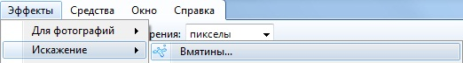

Вновь приветствую всех читателей!
По просьбам некоторых из вас, я постараюсь преподнести материал статьи наиболее доступным для понимания образом. Буду подробно описывать каждый этап, дабы любой человек, даже с минимальным уровнем владения Photoshop, смог бы проделать все нижеизложенное. Кроме того, я покажу как достичь результата разными способами, чтобы каждый смог выбрать для себя наиболее удобный ему вариант. Отмечу, что все описанное в этой статье было создано без использоания планшета, но если таковой у вас имеется, то вы сможете сравнить ваш результат с полученным у меня.
Итак, сегодня речь пойдет про рисование карт игровых локаций в Photoshop.
Ландшафты в играх бывают самые разнообразные, от далеких планет и футуристичных городов до темных подземелий с горящей лавой. Мы рассмотрим некоторые основные приемы рисования карт игрового мира на примере отдельно взятой части некоего фэнтезийного континента.
Итак, для начала отдельно (можно на обычной бумаге) нарисуем скетч (эскиз) будущей карты, показав основную форму террэйна, наметить реки, озера, леса и горы (если таковые есть). Также отметим точками города и населенные пункты и подпишем их. Далее создаем новый документ большого разрешения и заливаем холст светлым цветом либо текстурой. Чтобы залить весь слой цветом, нажимаем Ctrl+A, потом правым кликом выбираем Fill («Заливка») и в поле Color выбираем цвет (Можно и по другому: в главном меню выбираем пункт Layer «Слой», затем New fill layer, и Solid Color «Заливка цветом». В появившемся окошке вводим название слоя (если нужно) устанавливаем цвет слоя и прозрачность, нажимаем Ок, и в окне Color picker выбираем цвет. Можно залить холст бесшовным узором «Паттерном», для этого вместа пункта Solid color выбираем Pattern. Я обычно в качестве подложки использую реальные отсканированные текстуры (их можно скачать через Google картинки). Для этого я в меню File выбираю пункт Place «Поместить» и открываю сохраненную текстуру. После нажатия Ок, текстура сразу появляется на новом слое. Ее можно подогнать воспользовавшись управляющими маркерами по краям. Поверх новым слоем рисуем береговую линию (стараемся чтобы она была реалистичной, изорванной). Лично мне нравится следующий способ: в редакторе Paint.Net (который, кстати является отличной заменой MS Paint) я на отдельном слое крупной кистью рисую очертания суши
Затем я применяю фильтр «Вмятины».

Благодаря ему можно быстро сделать изорванную береговую линию.
Затем я переношу полученный результат можно сохранить в формате Png и затем открыть в Photoshop, воспользовашись в меню File командой Place либо просто в Paint.Net нажать Ctrl+A, потом Ctrl+C, и затем в Photoshop нажать Ctrl+V. В Photoshop я решил расширить формат рисунка, воспользовавшись масштабированием (пункт главного меню Edit «Правка» — Image size «Размер изображения»), обозначил реки воспользовавшись инструментом «Ластик» маленького радиуса и чуть подкорректировал береговую линию в некоторых местах.
Делаем дубликат этого слоя. Теперь самое интересное: заходим в параметры наложения слоя (правой кнопкой на слое, выбираем пункт Blending options «Параметры наложения»), в окошке параметров устанавливаем прозрачность заливки «Fill opacity» на 0% и добавляем обводку радиусом в 1 писксель темно-коричневого цвета (самый последний пункт в окне параметров, слева, называется «Stroke» — обводка). Мы получили контур береговой линии. Вот как все выглядит с тексутурой на нижнем слое:
Далее, я установил наложение цвета (пункт «Color overlay», взял темно-коричневый), установил ему режим «Умножение» («Multiply») с прозрачностью 30%. Затем я создал дополнительный слой для водоемов на основе инвертированного слоя суши, и установил ему белую заливку и режим «Перекрытие» (overlay) с прозрачностью 35%. Поясняю это предложение русским языком:) выделяете слой, с которого мы делали дубликат, нажимаете Ctrl+i (эта команда инвертирет цвета, из черного делает белый и наоборот), потом устанавливаем режим «Перекрытие» (overlay) и прозрачность 35%
Я хотел придать морю немного глубины, поэтому воспользовавшись ластиком с прозрачностью 30% и мягкими краями я прошелся по определенным участкам:
Разместим на карте компас для навигации: для этого сначала в любом месте холста на новом слое нарисуем ломанную линию
Затем, отразив ее по горизонтали мы получим стрелку компаса. Это делается так: создаете дубликат слоя, нажимаете Ctrl+A, потом выбираете инструмент Move tool (кнопка V), убеждаемся что вверху стоит галочка «Show transform controls» и используя управляющие маркеры отражаем стрелку (тянем боковой маркер в противоположную сторону). Выделяем слои с двумя половинками стрелки в списке слоев и объединяем их (Ctrl+E). Далее эту стрелку отразим по вертикали. Выделим обе стрелки, скопируем их и повернем на 90 градусов (кнопка V, потом наводим курсор чуть выше углового маркера и нажав левой кнопкой поворачиваем). В итоге получим 4 стрелки соответствующие 4-м сторонам света. Потом выделяем все стрелки и еще раз их копируем. Поворачиваем их на 45 градусов и добавляем произвольных окружностей над или под стрелками. Окружности можно рисовать по разному, перечислю некоторые способы:
1 — Берется кисть диаметра желаемой окружности с жесткими краями, ею ставится точка на месте будущей окружности, затем берется ластик диаметром чуть поменьше и ставиться точка в этом же месте. Ластик убирает заливку внутри и оставляет лишь окружность.
2 — Тоже самое что и в пункте 1, только вместо ластика щелкаем правой кнопкой на слое (убедитесь что вы рисуете окружность на новом слое), выбираем пункт Blending options «Параметры наложения»), в окошке параметров устанавливаем прозрачность заливки «Fill opacity» на 0% и добавляем обводку (пункт «Stroke» — обводка).
У меня получилось что-то похожее на печать Хаоса в Warhammer)
Я уменшил 4 дополнительные стрелки (выделяете слои с 4 стрелками, берете инструмент Move tool, клавиша V, тяните угловые маркеры), написал название частей света (инструмент Horizontal type tool, клавиша T) и разместил компас в наиболее подходящем месте карты (выделеив все слои с элементами компаса и передвинув их инструментом Move tool):
Пришло время рисовать горы. По моей задумке континент вверху карты с севера покрывают обширные горные хребты. Создаем новый слой и начинаем рисовать горную гряду. Общий принцип примерно такой: сначала мелкой кисточкой показываем общие очертания гор (не зыбываем по краям добавлять горы поменьше и холмы, для реализма). Как я говорил, у меня под рукой нет планшета, так что простите за качество)
Далее соединим вершины некоторых гор:
Постепенно добавляем детали:
В дальнейшем мы более тщательно проработаем горы, сейчас главное наметить контуры. Таким образом я нарисовал северные горные хребты и небольшой отрог. При этом я копировал некоторые участки чтоб ускорить процесс. Как можно заметить из следующего рисунка (см. левый верхний угол), я начал менять геометрию рек. Делая реки более извилистыми я визуально хочу поменять угол зрения. Правило такое: сначала извилины маленькие, затем с движением реки к устью амплитуда увеличивается
Далее, начинаем рисовать конуры леса. Сначала рисуем обобщенно, чтоб показать границу леса:
Затем добавляем детали, придавая глубину:
Ну и напоследок нарисуем маленькие стволы деревьев:
Продолжаем в том же духе заполняя карту, вот мой законченный рисунок контуров гор и лесов северной части континента для примера:
Когда все контуры лесов и гор на карте прорисованы, можно переходить к тональной проработке. Создаем новый слой (можно назвать его Shading), ставим режим наложения слоя Multiply («Умножение») и темным цветом рисуем тени на горах (тени должны быть всегда с одной стороны, противоположной вооброжаемому источнику света) и тени под нижней кромкой леса:
Далее, создаем новый слой с режимом наложения Screen («осветление») и проходим белым цветом по вершинам гор и легонько по деревьям.
Далее, я в той же технике нарисовал еще один лес, пару плато и начал потихоньку подписывать местные достопримечательности, используя инструмент Horizontal type tool, клавиша T и деформацию дугой. Чтобы ее применить нужно выделить слой с тектом, выбрать инструмент Move tool, клавиша V и нажать на один из управляющих маркеров. Затем вверху нажать кнопку , и выбрать деформацию из списка:
Вот что получается у меня на данном этапе:
Таким же образом рисуются города, на моей карте они будут показаны обобщенно (замок и несколько домиков). Для удобства рисования прямых линий кисточкой просто зажмите клавишу Shift. Чтоб провести линию из одной точки в другую, поставьте кисточкой точку, зажмите Shift наведите курсор на другую точку и щелкните левой кнопкой мыши.
Таким образом, постепенно я дорисовал все элементы на карте. Дополнительно я добавил пару украшательств и подписал карту. Данная карта была отрисована в целях обучения, сугубо для статьи и не имеет ничего общего с другими. Все совпадения названий, если таковые имеются являются случайными.
Поздравляю, вы дочитали статью до конца! Хочу поблагодарить тех, кто проделал все вышеперечисленное, и пожелать всем усидчивости в нелегком творческом труде и конечно же вдохновения! Рисуйте всегда, рисуйте везде! :)
P.S. Буду рад ответить на любые ваши вопросы, касательно данной статьи и Adobe Photoshop в целом.
{kind=link}
{kind=link}
{kind=link}
{kind=link}
{kind=link}
{kind=link}
{kind=link}
{kind=link}
{kind=link}
{kind=link}
{kind=link}
{kind=link}
{kind=link}
{kind=link}
{kind=link}
{kind=link}
{kind=link}
{kind=link}
{kind=link}
{kind=link}
{kind=link}